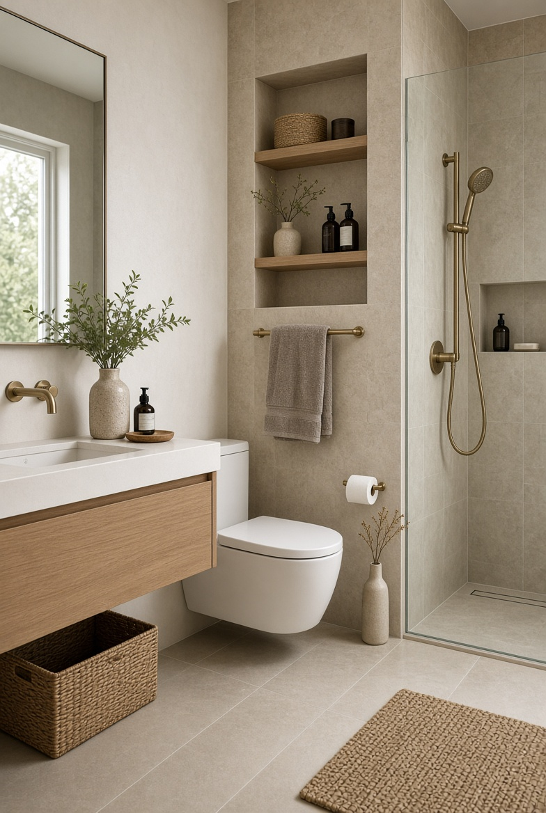
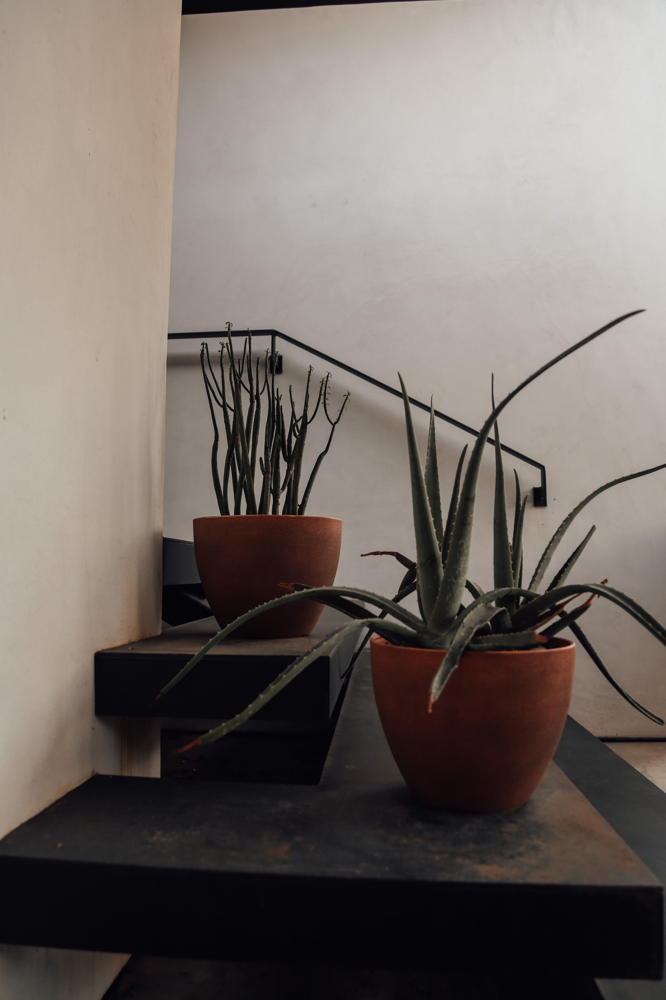

En este artículo
Elige una buena ubicación
La ubicación determina buena parte de la comodidad de una zona de descanso exterior. Antes de comprar muebles, observa dónde llega el sol durante las diferentes horas del día, desde qué lugares se ve el jardín y qué zonas quedan protegidas del viento. Una ubicación atractiva puede dejar de ser agradable si recibe demasiado calor al mediodía o si está expuesta a corrientes constantes.
Observa el lugar antes de decidir
Visita la zona a diferentes horas y en distintos días. Así podrás comprobar si el sol, el ruido o el viento cambian considerablemente y tomar una decisión más realista.
También conviene pensar en la relación con la vivienda. Si la zona de descanso está cerca de la cocina o de una puerta de acceso, será más fácil utilizarla durante comidas o reuniones. Si buscas un espacio para leer y desconectar, quizá prefieras un rincón algo más apartado y tranquilo.
No es necesario disponer de un jardín enorme. Una esquina bien elegida puede convertirse en un espacio útil si se aprovecha la orientación, la vegetación y el mobiliario de forma proporcionada.
Crea sombra y protección
La sombra puede ser determinante para que una zona exterior resulte utilizable durante más horas. Si ya existe un árbol que proporciona cobertura, puede convertirse en un punto de partida excelente. Cuando no hay sombra natural suficiente, existen otras soluciones, como toldos, pérgolas o elementos textiles diseñados para exteriores.
Usa la vegetación como aliada
Árboles, arbustos y trepadoras pueden aportar sombra y sensación de refugio. Eso sí, hay que considerar su crecimiento y el mantenimiento que requerirán antes de plantarlos cerca de una zona de descanso.
La protección no debe bloquear por completo la ventilación. Un espacio exterior necesita movimiento de aire para evitar una sensación excesivamente calurosa. La posición del elemento de sombra debería adaptarse a la orientación del jardín y a las horas en que más se utilizará la zona.

Además del sol, piensa en la lluvia ligera y en el viento. Una solución que funciona perfectamente en un día tranquilo puede resultar incómoda si las condiciones cambian. Diseñar con cierta flexibilidad permite utilizar el espacio en más situaciones.
Selecciona muebles cómodos y resistentes
El mobiliario debe adaptarse al tamaño de la zona y al uso que tendrá. Si el objetivo principal es leer, una butaca cómoda puede ser más útil que un conjunto completo de comedor. Si el espacio se utilizará para comer, conviene priorizar una mesa con dimensiones adecuadas y asientos que permitan permanecer allí durante cierto tiempo.
Deja espacio para moverse
No llenes la zona con muebles hasta el último centímetro. Mantener una circulación clara hace que el jardín resulte más cómodo y facilita limpiar alrededor de los elementos.
Para exteriores, el material y el mantenimiento son especialmente importantes. Antes de elegir, comprueba si el fabricante indica que el producto está preparado para permanecer al aire libre y qué cuidados necesita. Un mueble bonito que exige protección constante puede no ser adecuado si buscas una zona sencilla de mantener.
Los textiles también deben ser apropiados para exteriores cuando vayan a permanecer fuera. Cojines desenfundables y fáciles de guardar permiten adaptar el espacio sin convertir cada cambio de tiempo en un problema.
Crea un ambiente agradable con vegetación y luz
La vegetación puede hacer que una zona de descanso se sienta más integrada con el jardín. No es necesario rodearla completamente de plantas. Una combinación de diferentes alturas, texturas y algunos ejemplares aromáticos puede crear una sensación de refugio sin dificultar el mantenimiento.
Mantén una paleta coherente
Repetir algunos tonos presentes en la vegetación, la fachada o los materiales del jardín ayuda a que la zona parezca parte del conjunto y no un elemento colocado al azar.
La iluminación permite prolongar el uso del espacio cuando cae la tarde. Una luz suave y bien dirigida suele resultar más agradable que una fuente muy intensa. Si utilizas iluminación exterior, procura colocarla de manera que no deslumbre a las personas que están sentadas.
Los elementos decorativos deben tener una función o aportar una sensación que realmente busques. Una alfombra exterior, algunos cojines o una mesa auxiliar pueden ser suficientes para dar carácter al rincón. Demasiados objetos pueden dificultar la limpieza y hacer que el espacio pierda su sencillez.
Haz que el descanso no se convierta en trabajo
Una zona exterior debe ser agradable también cuando llega el momento de mantenerla. Deja acceso suficiente para limpiar el suelo, revisar las plantas y mover los muebles cuando sea necesario. Si utilizas textiles, establece un lugar donde guardarlos cuando llueva o cuando no vayas a utilizarlos durante un tiempo.
Diseña para tu rutina
Si sabes que no vas a mover cojines todos los días, elige materiales y soluciones que puedan permanecer preparados. La mejor zona de descanso es la que resulta fácil de utilizar, no la que exige preparar el espacio durante media hora.
Los muebles deberían revisarse periódicamente para detectar tornillos sueltos, manchas, desgaste o pequeñas señales de deterioro. Atender estos problemas pronto suele ser más sencillo que esperar a que afecten a toda la pieza.

También conviene observar la vegetación alrededor. Ramas que crecen hacia la zona de paso, hojas que se acumulan sobre los asientos o raíces que levantan el suelo pueden afectar la comodidad. Una revisión breve y frecuente mantiene el rincón preparado para disfrutarlo.
Consejos adicionales
La escala es otro aspecto importante. En un jardín pequeño, un conjunto de muebles demasiado grande puede hacer que la zona parezca aún más reducida. En cambio, unas pocas piezas bien proporcionadas pueden crear un rincón completo sin bloquear las vistas ni la circulación. En espacios amplios, agrupar los muebles ayuda a evitar que el área de descanso parezca dispersa.
También es interesante aprovechar las vistas existentes. Si desde una determinada esquina se observa un árbol, una composición de flores o una parte especialmente bonita del jardín, orienta los asientos hacia ese punto. No siempre es necesario añadir decoración: a veces la propia vegetación puede convertirse en el elemento principal del espacio.
Con el tiempo, revisa si realmente utilizas la zona. Si apenas te sientas allí, analiza por qué. Puede que falte sombra, que el asiento no sea cómodo o que el camino de acceso resulte poco práctico. Ajustar el diseño a la experiencia real es una de las mejores formas de conseguir que el jardín se convierta en un espacio de uso cotidiano.
La elección de las plantas cercanas también puede reforzar el carácter del rincón. Especies con aromas suaves, follajes interesantes o flores de temporada pueden aportar una experiencia más completa, siempre que sean apropiadas para el lugar y no aumenten demasiado el mantenimiento. La vegetación debe acompañar el descanso, no obligarte a realizar podas constantes alrededor de los asientos.
En definitiva, el espacio debe adaptarse a la forma en que realmente disfrutas del exterior. Si prefieres desayunar, necesitas una superficie práctica; si lees, necesitas buena luz y un asiento cómodo; si conversas con otras personas, conviene orientar los muebles para facilitar la interacción. Definir primero el uso evita comprar elementos que después apenas utilizarás.
Preguntas frecuentes
¿Dónde conviene colocar una zona de descanso en el jardín?
En un punto que combine comodidad, buena orientación, cierta protección y fácil acceso desde la vivienda. La mejor ubicación depende del sol, el viento, las vistas y el uso que quieras darle.
¿Cómo conseguir sombra sin hacer una gran obra?
Puedes aprovechar árboles existentes o utilizar soluciones como toldos, sombrillas o estructuras ligeras apropiadas para exteriores. La elección debe considerar estabilidad y condiciones climáticas.
¿Qué muebles son mejores para un espacio de descanso exterior?
Los que se adapten al uso, al tamaño del lugar y a las condiciones exteriores. La comodidad y la resistencia deberían tener prioridad sobre la cantidad de piezas.
Conclusión
Crear una zona de descanso en el jardín consiste en diseñar un pequeño espacio para disfrutar, no en llenarlo de muebles. La ubicación, la sombra, la comodidad de los asientos, la vegetación y la iluminación deben trabajar juntas. Si además eliges materiales apropiados y mantienes una circulación sencilla, el rincón será más fácil de cuidar y tendrá muchas más posibilidades de convertirse en un lugar que realmente utilices.